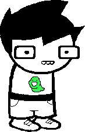

John
John is the main protaginist and is who we are introduced to first. He loves bad movies with Nick Cage in them, pranks, magic, is a very poor programmer, and hates cake with a passion due to how much his father makes it. The story begins on his birthday as he waits for his late copy of the Sburb beta. Below is his room

John often complains about his father, irritated with the way he decorates the house with jesters(sorry,
harlequins. My mistake) (This is his father's attempt to relate to his dson) He resides within a Washington State suburb. John is the first of the kids to
enter the medium and has to figure out the game mechanics with his Host player, Rose Lalonde.
His object to enter the medium is an apple and his kernel sprite was prototyped with the ashes of his Nanna
and a harlequin doll creating Nana Sprite
| John Egbert |
|---|
|
 |
| Classpect |
| Heir of Breath |
| Strife Specibus |
| Hammerkind |
| Chumhandle |
| EctoBiologist |
|
Ectobiological family |
| Jade Harley |
| Jane Crocker |
| Jake English |
| Guardian |
| Dad Egbert |
|
Nanna/Pre scratch Jane |
|
Post-Scratch alternate |
| PopPop Crocker |
| Planet |
|
The Land of Wind and Shade |